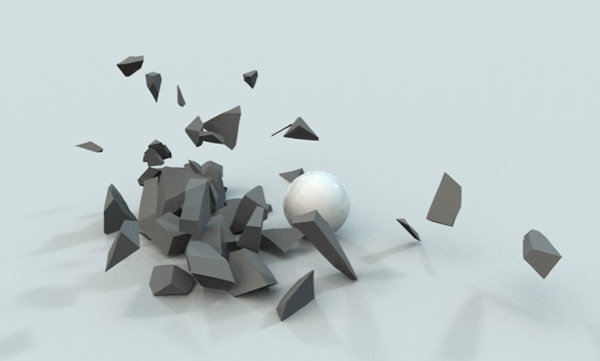

This project will simulate a brittle object shattering against the ground.
We will attempt to realistically simulate objects, such as glass and ceramic,
falling to the ground and the ways in which they break.
Problem Description
This problem is important because it is hard for animators to draw an object shattering frame by frame,
and this action is a common occurence in both animation and video games, so there should be a way for it to be easily produced,
regardless of initial conditions. Additionally, the shattering effect of a brittle object
varies widely depending on the initial conditions of the object as well as the magnitude of the
force applied onto the object, so a shattering procedure should be able to produce realistic results
regardless of the parameters.
This problem is challenging because it involves animating of the object
dropping or being struck by an object, determining the physics of how an object shatters and how
cracks form and propogate along the object, and remeshing of the new fragments after the object has been split.
We will solve this problem by implementing one or more of the methods described in the papers mentioned in the Resources below.
Goals and Deliverables
What we plan to deliver
-
What we want to accomplish: A generic brittle object shattering as it is dropped from various different heights, demonstrating our implementation of the fracturing algorithm and its responsiveness to different initial conditions and forces.
-
Desired renderings/demo: We want to produce an animated rendering of an object hitting the ground and shattering.
A related photo example:

-
How we will measure success: It is tough to specify metrics for the quality of the rendering, but successful renderings should look similar to how
that object would shatter in the real world, so we will measure success based on whether we think the renderings look realistic.
What we hope to deliver
-
What we want to accomplish: Multiple different brittle material types and rendering demonstrating how the same object made with different materials will shatter.
-
Desired renderings/demo: We want to produce animated renderings of an objects of different materials shattering upon impact with the ground or after being hit by a force. We would like to create an interactive scene that has brittle objects and the user can select the object material and what force to apply to the object, causing it to shatter.
-
How we will measure success: As above, we will measure success based on whether we think the renderings look realistic. If examples exist for how the object will shatter as that material, we will also compare our results to these.
Schedule
Week 1:
- Set up GLSL using project 3-2, part 5 as a guide
- Generate a scene with basic physics of an object falling to the ground
- Create or find triangle mesh objects such as saucers, bowls, and glass panes that we want to simulate shattering
Week 2:
-
Work on the algorithm described in the papers below and implement one or more different ways of creating shattering effects,
ideally having at least one method that is both realistic and fast enough to be rendered in real time
-
Complete the first rendered scene of the utah pot shattering from various different heights
-
Document progress and create milestone video
Week 3:
-
Create some interactive features in the webGL real time rendering for demo purposes
-
Create ability to use different materials for the objects
-
Extend shattering effect beyond just the object dropping. Add ability for shattering when force is applied onto the object
Week 4:
- Finishing touches on project
- Do writeup
- Make video
Resources
Papers:
Fast and Controllable Simulation of the Shattering of Brittle Objects
Graphical Modeling and Animation of Brittle Fracture
Real-Time Simulation of Deformation and Fracture of Stiff Materials
Software Platform: GLSL shaders using webGL. We will most likely be using the webGL code from project 3-2 part 5 as a starting point.
Computing/Hardware Platform: Macbook Pro